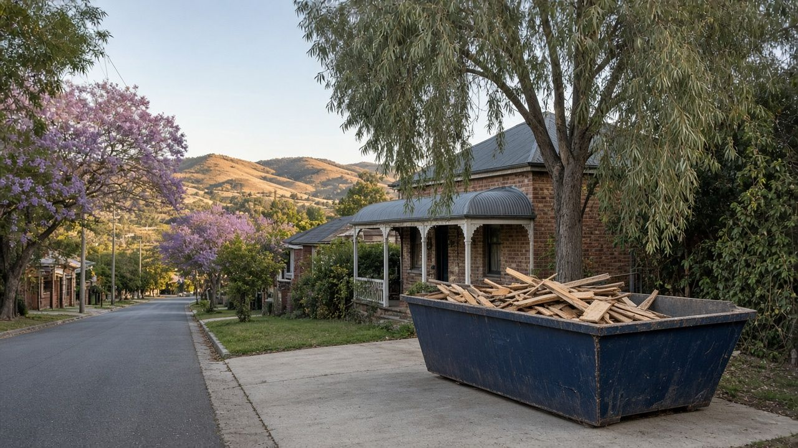
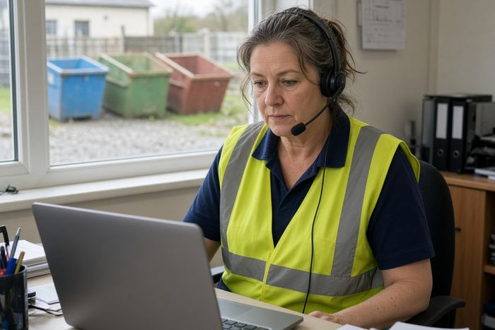
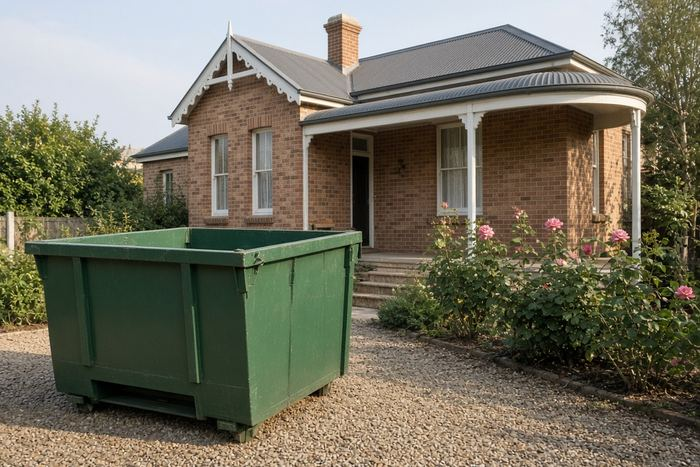
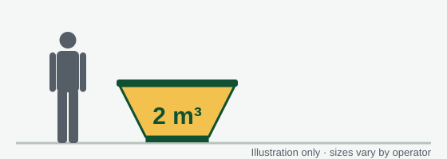
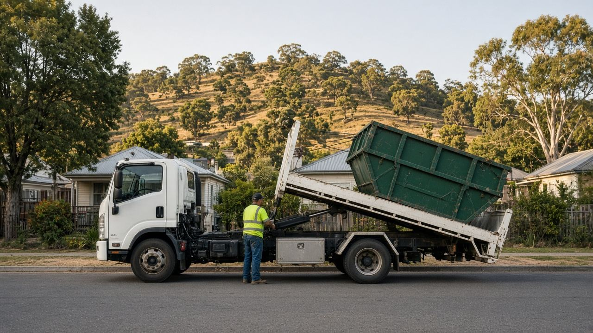
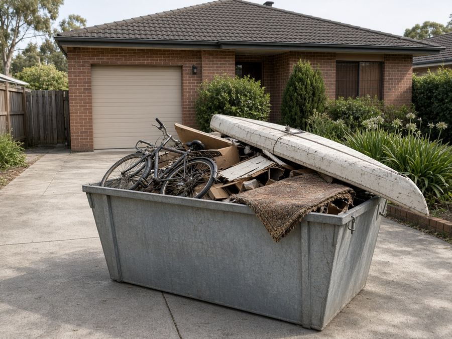
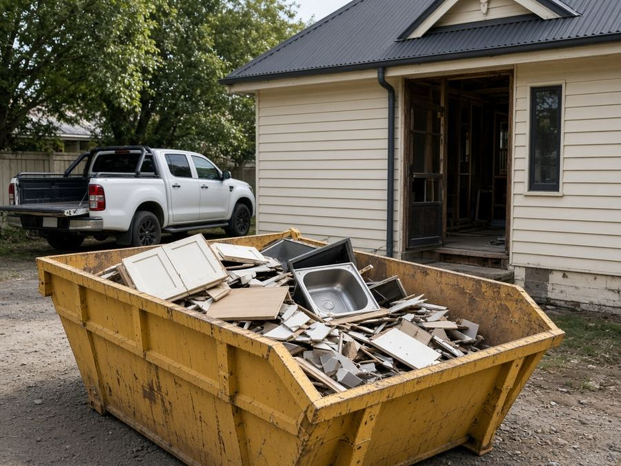
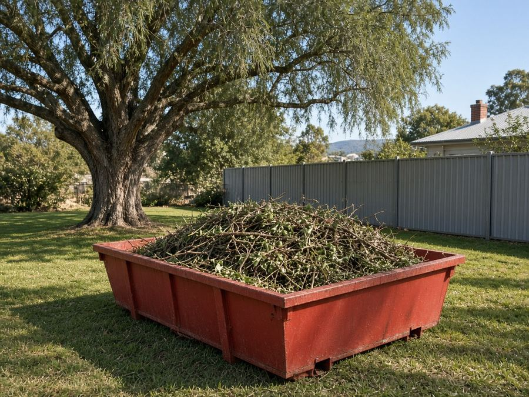
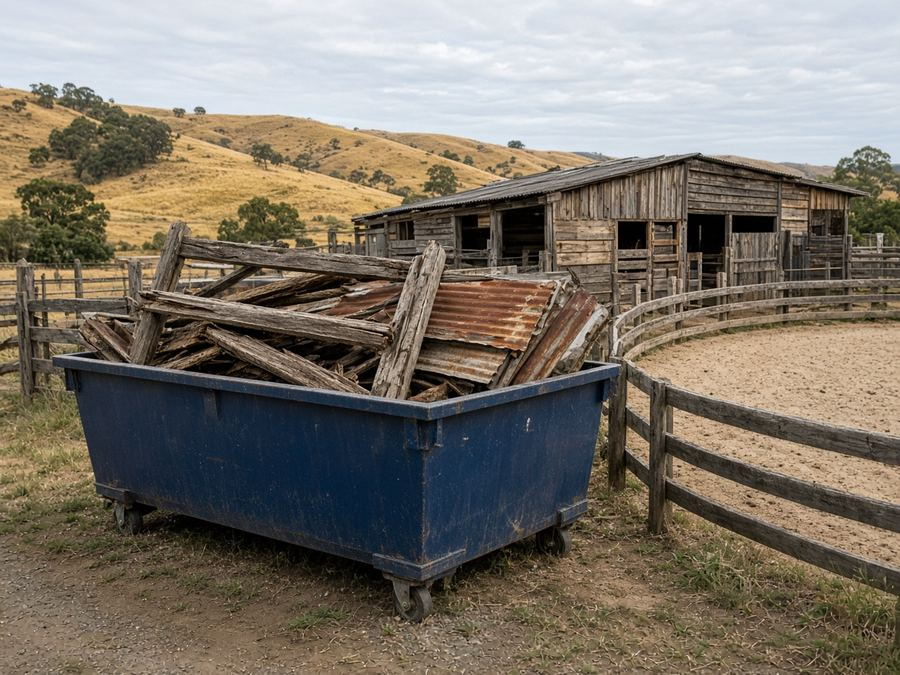
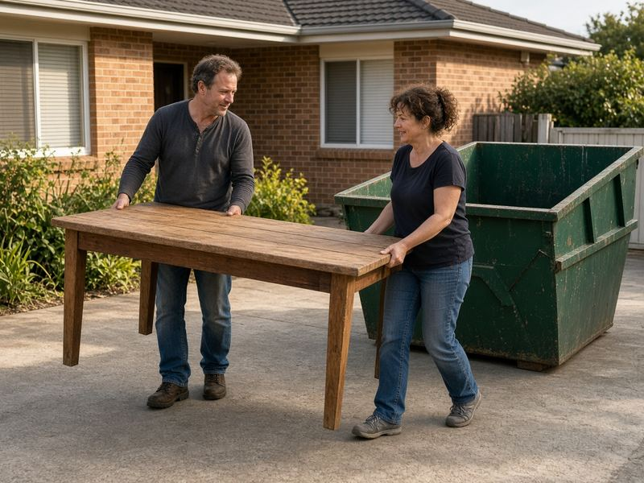

Skip Bins Tamworth: Free Skip Bin Hire Quotes Across the Tamworth Region
Renovating a Federation cottage in East Tamworth, clearing a horse property at Moore Creek or cleaning out the shed in Calala? Tell us your suburb, skip size and waste type, and we'll pass it to one local skip bin operator for a free, no-obligation quote.
Updated 23 October 2026
Get a free skip bin quote in Tamworth
- Free quote for your exact job
- One local operator, not a call-centre auction
- Tamworth, Kootingal, Manilla, Barraba and surrounds
- No obligation to book
How it works
- 1
Tell us what's going
Pick your suburb, skip size and waste type in the quote form, then add your contact details.

2We send it to one local operator
Your request goes to one skip bin operator who services your part of the Tamworth region.

3Confirm price and delivery
The operator calls you to confirm the price and drop-off. Book only if you're happy with it.
Tamworth Skip Bins is a referral and quote service run by Raf Web Studio. We don't own skips or trucks and we don't take payments. The operator who quotes you supplies the bin and sets the price and terms.
Skip bin sizes for Tamworth jobs
Tamworth jobs range from trailer-style mini skips for a weekend tidy-up to big bins for renovations and rural clean-ups. A 2–3 m³ bin covers most sheds and garages, 4–6 m³ a bathroom or kitchen, and 8 m³ or more a whole house. Skips are measured in cubic metres (m³). Wheelie bin comparisons assume a standard 240-litre bin (0.24 m³). Trailer loads assume a 6×4 box trailer loaded level with its sides, roughly 1 m³. Shapes and dimensions vary between operators, so we don't list exact measurements.



Illustrations are approximate and not to an exact scale.
Mini skip
≈ 8 wheelie bins · ≈ 2 trailer loads
A weekend tidy-up, a shed or tack room, or a small load of heavy waste.
Small skip
≈ 13 wheelie bins · ≈ 3 trailer loads
A backyard clean-up or clearing a room or two.
Bathroom or laundry reno
≈ 17 wheelie bins · ≈ 4 trailer loads
A bathroom or laundry renovation, or new flooring through a cottage.
Kitchen reno or big clean-up
≈ 25 wheelie bins · ≈ 6 trailer loads
A kitchen renovation or a big yard clean-up.
House clear-out
≈ 33 wheelie bins · ≈ 8 trailer loads
Moving house or clearing a deceased estate.
Large renovation
≈ 38 wheelie bins · ≈ 9 trailer loads
A large renovation or extension in an older home.
Builders and big jobs
≈ 50 wheelie bins · ≈ 12 trailer loads
Building sites, stables or shed demolition, or a big rural clean-up. Needs good access.
Some Tamworth operators offer trailer-style skips that can go on tighter sites. Heavy waste (soil, concrete, bricks) usually needs a smaller bin because of weight limits.
What can and can't go in a skip
Waste type matters as much as size. Operators tip loads at licensed facilities, mainly council's Forest Road Waste Management Facility, and different waste types cost different amounts to dispose of.
Usually accepted
- General household waste: furniture, toys, clothes, boxes, cupboard contents and general junk.
- Green waste: prunings, lawn clippings, hedge trimmings and fallen branches (often cheaper on its own, with no dirt or rubbish mixed in).
- Renovation waste: timber, plasterboard, old cabinets, carpet, tiles and fittings.
- Heavy or clean fill: soil, sand, concrete, bricks, rock and pavers (often needs its own bin and has a lower weight limit).
- Scrap metal: old roofing iron, fencing, steel yards and gates.
Not accepted, or extra charge
- Asbestos and fibro: never in a normal skip (see below).
- Tyres: usually banned or charged per tyre.
- Car and household batteries: a fire risk in a skip.
- Gas bottles and aerosols: can explode when compacted.
- Paint, oils, chemicals and liquids: including farm and stable chemicals, sump oil and paint.
- Mattresses: often accepted for an extra fee.
- Food waste, medical waste and e-waste: check first. Many operators won't take TVs, computers or fluorescent tubes.
A note on asbestos
Many older Tamworth homes, sheds and stables include fibro sheeting or asbestos-cement roofing. In NSW, removing more than 10 square metres of bonded (non-friable) asbestos needs a licensed removalist, and any friable asbestos needs a Class A licence. See SafeWork NSW's asbestos guidance. If you suspect asbestos, say so on the quote form. Never hide it in a general skip.
Dropping things off yourself
Tamworth Regional Council's Forest Road Waste Management Facility takes most household and commercial waste, and there's a small-vehicle transfer station at 123A Forest Road. Council says commercial asbestos and soil need a Waste Disposal Permit requested at least 48 hours ahead (residents don't need one), and loads must be covered, with fines starting at $750. Check Tamworth Regional Council's website for hours and fees.
Skip bin prices in Tamworth
Here is the only verifiable local pricing we found on 23 Oct 2026. Other operators we checked don't publish prices. Tell us about your job and a local operator will quote for it. Get a free quote.
| Hire period | Published price range |
|---|---|
| 3-day hire | $250–$400 |
| 7-day hire | $280–$430 |
A guide only. These are not our prices and not a quote. They come from one operator's public website, which we don't name, and cover the range of bin sizes it lists. Check what size, waste type and weight limit are included. Your price comes from the operator who quotes you.
What changes the price
Size and weight
Bigger bins cost more, though the price per cubic metre usually drops. Heavy loads have weight limits.
Waste type
Green waste and general household waste usually cost less to tip than mixed building waste or soil.
Distance and hire length
Longer hire periods, deliveries out to Barraba, Manilla or Bendemeer, and tricky access can change the price.
Book the smallest bin that will do the job, keep heavy and green waste separate, and only hire for the days you need.
Putting a skip on the street: Tamworth Regional Council rules
Last checked: 23 Oct 2026
On your own property
The easiest place for a skip is on your own land, such as the driveway or yard. Council's section 68 approval covers waste containers in a public place, so a bin wholly on your property generally doesn't need it. On acreage, check the truck has firm, level access, especially after rain.
On the road, footpath or nature strip
Tamworth Regional Council requires an "Approval to Place Waste in a Public Place" under section 68 of the Local Government Act 1993, lodged through the NSW Planning Portal. Council's 2025–26 fees list $120 for this approval.
Before you book a skip on the street, check with Tamworth Regional Council on (02) 6767 5555 or visit the council website. Fees change each financial year, so confirm the current amount. Mention it on the quote form too.
Wherever the skip goes, keep it clear of driveways, hydrants, bus stops and footpaths, and don't fill it above the rim.

Free skip bin quotes across the Tamworth region
Get a free quoteSkip bin guides for Tamworth
Plain-English guides to sizes, waste rules and Tamworth Regional Council permits, plus pages for nearby towns.
Local area guides
Areas we cover around Tamworth
We take quote requests from Tamworth and the surrounding towns and villages. The operator confirms delivery to your address.
Tamworth
- Tamworth
- East Tamworth
- West Tamworth
- North Tamworth
- South Tamworth
- Hillvue
- Westdale
- Oxley Vale
- Calala
- Taminda
East and north-east
- Nemingha
- Kootingal
- Moonbi
- Hallsville
- Moore Creek
- Woolomin
- Bendemeer
Not listed? Choose "Other" in the form and tell us your town.
Common skip bin jobs in Tamworth
The jobs that come up most around Tamworth.

Garage and house clean-outsDecluttering, moving or clearing an estate. A 3–6 m³ skip suits most homes.
Kitchen and bathroom renosOld cabinets, tiles and plasterboard. Mention any fibro before you book.
Garden and yard clean-upsPrunings, hedges and fallen branches. Keep it green-only for a better price.
Horse and rural propertiesClearing stables, sheds and old fencing on acreage around Moore Creek, Nemingha and Duri.Federation and older homes
Renovating a cottage in East or North Tamworth often turns up old linings and fibro. Get it checked before it goes in a bin.
Weekend tidy-ups
A small trailer-style skip or mini skip for a weekend can be the simplest option for a quick clean-up.
Quick answers
What areas does Tamworth Skip Bins cover, and is there a call-out fee?
We take skip bin quote requests from Tamworth and nearby areas, including East Tamworth, West Tamworth, North Tamworth, South Tamworth, Hillvue, Westdale, Oxley Vale, Calala, Taminda, Nemingha, Kootingal, Moonbi, Hallsville, Moore Creek, Woolomin, Bendemeer, Attunga, Manilla, Barraba, Duri. The quote service is free, so there's no call-out fee from us. The operator includes delivery and pick-up in its quote. Longer hire periods, deliveries out to Barraba, Manilla or Bendemeer, and tricky access can change the price.
Do I need a licence or permit for a skip bin?
You don't need a licence to hire a skip. A skip wholly on your own property generally doesn't need approval. On a road, footpath or nature strip, Tamworth Regional Council requires an "Approval to Place Waste in a Public Place" under section 68, listed at $120 in its 2025–26 fees. Call council on (02) 6767 5555. Asbestos is different: asbestos can't go in a general skip. More than 10 m² of bonded asbestos must be removed by a licensed removalist in NSW.
What affects the price of a skip bin?
One operator servicing Tamworth published $250–$400 for a 3-day hire and $280–$430 for a 7-day hire across its bin sizes (checked 23 Oct 2026). These aren't our prices or a quote. Size, waste type, weight, hire length and delivery distance all change the price, and a local operator will quote for your job.
Who supplies the skip?
Tamworth Skip Bins is a free referral and quote service run by Raf Web Studio. We don't own skips or trucks. We pass your request to one local skip bin operator who services your area, and they quote, supply the skip and set the hire terms.
Skip bin FAQ for Tamworth
How much does a skip bin cost in Tamworth?
One operator servicing Tamworth published $250–$400 for a 3-day hire and $280–$430 for a 7-day hire across its bin sizes (checked 23 Oct 2026). Your price depends on size, waste and location, so get a free quote.
Do I need a council permit for a skip in Tamworth?
For a skip on the road, footpath or nature strip, Tamworth Regional Council requires a section 68 approval, listed at $120 in its 2025–26 fees. A bin wholly on your property generally doesn't need one.
How do I apply?
Through the NSW Planning Portal. Call council on (02) 6767 5555 to check what's required.
What size skip do I need?
2–3 m³ for a shed or garage, 4 m³ for a bathroom, 6 m³ for a kitchen, and 8 m³ or more for a whole house.
Do you cover Kootingal, Manilla and Barraba?
Yes, we take quote requests from Kootingal, Moonbi, Manilla, Barraba, Attunga and other towns nearby. The operator confirms delivery.
Where is the Tamworth tip?
Council's Forest Road Waste Management Facility, with a small-vehicle transfer station at 123A Forest Road.
Do I need a permit to take asbestos to the Tamworth tip?
Council says commercial asbestos and soil loads need a Waste Disposal Permit requested at least 48 hours ahead. Residents don't need one, but check the handling rules with council first.
Do I need to cover my trailer?
Yes. Council says loads must be covered, and fines start at $750.
Can I put fibro in a skip?
No. Asbestos can't go in a general skip. More than 10 m² of bonded asbestos needs a licensed removalist in NSW.
Can I put stable waste or manure in a skip?
Ask the operator. Some treat it as green or organic waste and some don't accept it. Say what you have in the form.
What can't go in a skip?
Asbestos, tyres, batteries, gas bottles, chemicals, paint, oils and liquids. Mattresses and e-waste are often extra.
How long can I keep the skip?
The published options we found were 3-day and 7-day hires. Ask the operator if you need longer.
Is Tamworth Skip Bins a skip hire company?
No. It's a free referral and quote service run by Raf Web Studio. One local operator quotes you and supplies the skip.

Time to clear the decks?
Tell us your suburb, skip size and waste type and we'll pass it to one local Tamworth operator for a free quote.